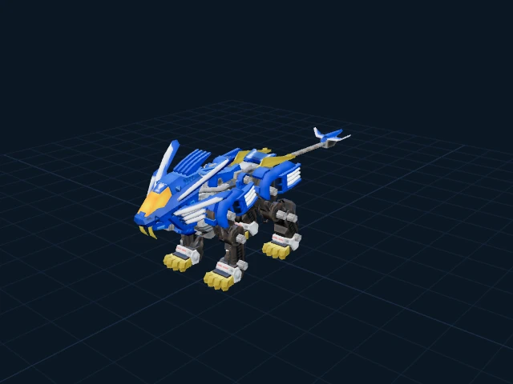

UNOFFICIAL · ZOIDS VS III · v0.1.0
Mechanical legends.
A closer look.
An open window into the models of Zoids VS III. Explore the forms, inspect the textures, and take a GLB into your own workspace.
Explore the collectionOriginal source IDs. Original converted asset bytes.
Read the rights and reuse terms before using an asset.

92model variants
87source IDs
102PNG textures
GLBtextures embedded
THE COLLECTION
Find your next model.
Every preview is rendered from its included GLB.
Source IDs are preserved; character names are unverified.
The collection could not load.
Check your connection and try again. The assets are also available on GitHub.
Browse asset files ↗No models match that search.
Try a source ID such as A01 or B12, or clear the filters.
BEFORE YOU BUILD
A useful starting point.
With honest limits.
Models, not a game
92 original GLBs with embedded textures, plus selected baked FBX animation downloads. No game executable, port, or complete decompilation.
Check the fit
Structure has been audited. Visual fidelity, units, materials, complete rigs, and animation correctness are not certified. Small exports may be partial objects.
Animation is experimental
Most original GLBs have no clips. Separate FBX packages cover 12 model IDs and 205 take records, with approximations and limits documented. These downloads are not played by the GLB viewer.
Rights stay with their holders
Public availability grants no additional reuse rights beyond applicable permissions. No blanket commercial-use or sublicensing license is supplied.